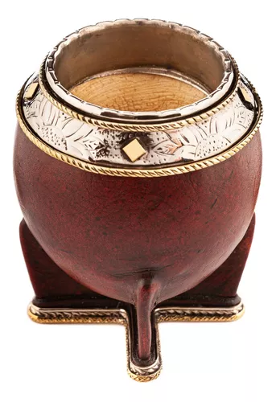

Mate Torpedo Imperial Premium

Categoria: ClasicosCalabaza, Calabaza, Mates, Imperiales
Mate Imperial Premium Calabaza Costuras Uruguayas Cincelado
Categoría de excelencia y de mayor inspiración, con cinta y virola de alpaca cincelada a mano, producto de la creación del artesano del momento. Los diseños no se suelen repetir y los cincelados son aleatorios.
Al ser la calabaza un fruto natural, todos los tamaños son distintos. Si queres algun tamaño en especial, no dudes en pedirnos